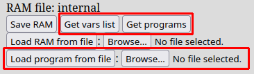
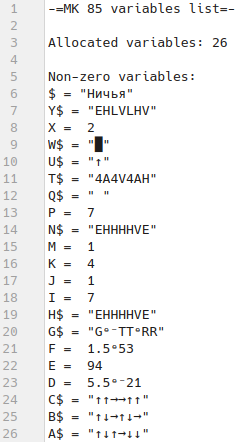
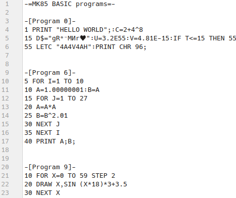
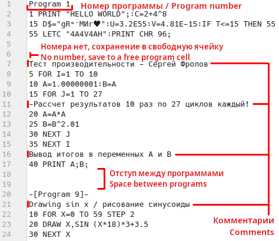
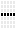
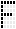
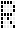
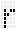
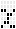

Справка по JS85EMU
Меню
Конвертеры BASIC данных (в секции загрузки и сохранения данных)

Выделенные переменные и программы хранятся в ОЗУ микрокомпьютера в собственном формате.
Поэтому для получения этих данных в читаемом текстовом формате и обратной загрузки используются конвертеры BASIC данных.
В эмуляторе имеется три конвертера:
Конвертер выделенных перменных

пример содержимого файла "mk85_vars.txt"
Данный конвертер позволяет получить список всех выделенных переменных
(по умолчанию их 26 (от A до Z) плюс специальная текстовая переменная $), значения которых не равны нулю.
При нажатии на кнопку "Get vars list" на диск сохраняется файл "mk85_vars.txt", пример которого виден выше.
Если количество выделенных переменных больше 26, следующие за Z переменные, согласно документации, именуются как Z(номер).
Для отображения специфичных символов из кодовой страницы МК 85, используются аналогичные или похожие по начертанию Unicode
символы, поэтому некоторые из них могут отображаться некорректно в вашем текстовом редакторе.
Таблица соотношений между Unicode и символами МК 85 представлена в самом низу страницы.
Конвертер BASIC программ в текстовый код

пример содержимого файла "mk85_programs.txt"
Этот конвертер предназначен для получения записанных в ОЗУ программ в виде текстового кода (т.н. листинг).
Кнопка "Get programs" сохраняет на диск файл "mk85_programs.txt", его пример также приведен выше.
Возможность сохранять листинги позволяет редактировать программы, используя обычный текстовый редактор, а также просто публиковать их,
чтобы другие могли загрузить в эмулятор или перепечатать на реальное устройство. Перед началом кода каждой программы указывается ее номер (0-9)
в памяти виртуального микрокомпьютера. Для отображения специфичных символов также используется Unicode,
однако для удобства редактирования некоторые символы (только вне кавычек) заменяются на эквиваленты,
например '↑' на '^', '≤' на '<=', '≥' на '>=', 'π' на 'PI', '≠' на '!=',
и только в числах 'ᵉ' на 'E' и 'ᵉ⁻' на 'E-'.
Конвертер текстового BASIC кода в программы

пример содержимого файла c программами
Поскольку программы можно выгружать из памяти, то логично и наличие обратного средства для загрузки текстового кода (листинга)
в виртуальный микрокомпьютер. Для этого присутствует кнопка "Load program from file" и соответствующее ей поле выбора файла.
Файл может содержать от 1 до 10 программ, отделенных друг от друга двумя пустыми строками.
Перед началом каждой программы можно указать ее номер в формате "Program *",
где * - номер от 0 до 9 (если ячейка будет занята, конвертация прервется).
В противном случае программа будет загружена в первую свободную ячейку.
Строки, в начале которых не указан их номер, считаются комментариями и игнорируются при конвертации.
Команды и переменные можно вводить в любом регистре
(но при конвертации они будут переведены в стандартный для микрокомпьютера верхний регистр, т.е. "print a$;" => "PRINT A$;").
Для удобства некоторые символы (только вне кавычек) можно заменять на эквиваленты,
например '↑' на '^', '≤' на '<=' или '=<', '≥' на '>=' или '=>',
'π' на 'PI', '≠' на '!=' или '><' или '<>', и только в числах 'ᵉ' на 'E' и 'ᵉ⁻' на 'E-'.
Если конвертация всех программ завершилась успешно,
появится уведомление с количеством обработанных программ и номерами ячеек, в которые они были сохранены.
В случае возникновения ошибки, конвертация прервется и в уведомлении будет указана причина ошибки (вместе с номером строки в файле), а также
количество обработанных перед этим программ и номера их ячеек.
Таблица соотношений символов МК 85 и Unicode
нажмите на символ, чтобы скопировать его
| x0 | x1 | x2 | x3 | x4 | x5 | x6 | x7 | x8 | x9 | xA | xB | xC | xD | xE | xF |
|---|
| 0x | |
◣ |
◢ |
◥ |
◤ |
🮚 |
🮛 |
{ |
} |
Ø |
… |
○ |
∑ |
° |
△ |
_ |
|---|
| 1x |
× |
÷ |
♠ |
♥ |
♦ |
♣ |
μ |
Ω |
↓ |
← |
→ |
¥ |
□ |
· |
Ъ |
ъ |
|---|
| 2x |
|
! |
" |
# |
$ |
% |
& |
' |
( |
) |
* |
+ |
, |

- |
. |
/ |
|---|
| 3x |
0 |
1 |
2 |
3 |
4 |
5 |
6 |
7 |
8 |
9 |
: |
; |
< |
= |
> |
? |
|---|
| 4x |
@ |
A |
B |
C |
D |
E | 
F |
G |
H |
I |
J |
K |
L |
M |
N |
O |
|---|
| 5x |
P |
Q | 
R |
S |
T |
U |
V |
W |
X |
Y |
Z |
[ |
≠ |
] |
↑ |
≤ |
|---|
| 6x | |
a |
b |
c |
d |
e |
f |
g |
h |
i |
j |
k |
l |
m | 
n |
o |
|---|
| 7x |
p |
q | 
r |
s |
t |

u |
v |
w | 
x |
y |
z |
ᵉ |
π |
ᵉ⁻ |
≥ |
█ |
|---|
| 8x |
ю |
а |
б |
ц |
д |
е |
ф |
г | 
х |
и |
й |
к |
л |
м |
н |
о |
|---|
| 9x |
п |
я |
р |
с |
т |
у |
ж |
в |
ь |
ы |
з |
ш |
э |
щ |
ч |
ё |
|---|
| Ax |
Ю |
А |
Б |
Ц |
Д |
Е |
Ф |
Г |
Х |
И |
Й |
К |
Л |
М |
Н |

О |
|---|
| Bx |
П |
Я |
Р |
С |
Т |
У |
Ж |
В |
Ь |
Ы |
З |
Ш |
Э |
Щ |
Ч |
Ё |
|---|
Символы, отмеченные красным (от 1 до 10), недоступны для ввода с помощью
клавиатуры микрокомпьютера, поэтому вместо них следует использовать команду "CHR дес. код", например "CHR 10" для символа '…'.
Символа 0 не существует, поскольку 0 является признаком конца строки в микрокомпьютере.
Символ 96 (0x60) не имеет собственного начертания, поскольку оно задается пользователем с помощью команды "LETC код или переменная",
например ' LETC "4ERE4E4" ' или ' LETC G$ '. Для него всегда следует использовать команду "CHR 96".
Меню